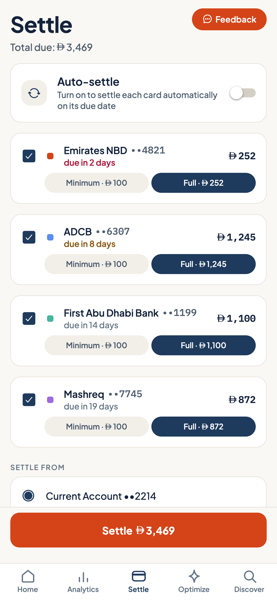
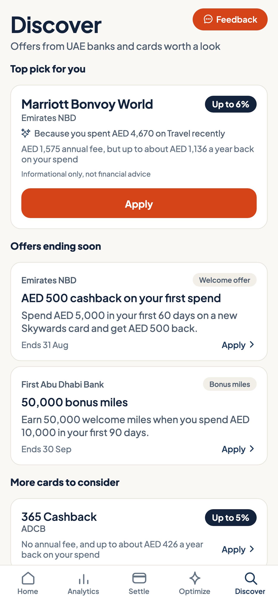

Zadi
Zadi
Every card you own, one app that thinks about all of them.
Zadi brings your credit cards from every bank into one place: what you owe, when it is due, which card to swipe, and what your rewards are really worth.

Sources: YouGov UAE survey; published UAE bank fee schedules and reward program terms.
The problem
No bank can show you a card it didn't issue.
A multi-card wallet in the UAE usually spans two or three banks. Each app shows its own slice, so the full picture lives in your head. That is where the money leaks.
Missed due dates
One forgotten date costs AED 230 to 300 in fees, and interest at 30 to 48% APR backdated to the day you spent.
The wrong card
Reward rates differ by card and by category. Paying with whichever card is on top quietly costs real dirhams every month.
Rewards nobody counts
No statement shows the gap between what you earned and what the right card would have earned. Points are real money, and they lapse in 12 to 24 months whether or not you noticed.
The product
One place that understands your whole wallet.
The whole picture, on one screen
Open Zadi and see what a bank app can never show you: everything, together.
- Combined spend and credit used across every bank
- Every due date in one list, with reminders that leave time to act
- Spending by category, month against month
The right card, before you pay
At the till, tell Zadi what you are buying. It ranks your cards for that purchase and shows the answer in dirhams.
- Category bonuses, caps and card limits all accounted for
- Miles and cashback compared in dirham value, so 5x miles stops beating 4% cash on name alone

The money you didn't have to lose
Zadi counts what the wrong card cost you: the gap between the rewards you earned and the rewards your own wallet could have earned.
- Tracked per category over 30 days, 3 months and 6 months
- Counted in AED, so you know what changing the habit is worth

Every card paid from one place
Settle gathers every card's amount due into one list, so paying the month takes one visit instead of three banking apps.
- Pay the minimum or the full balance on each card, from any account
- Auto-settle pays each card on its due date, so a date can never slip past
- Payment initiation only: your money moves bank to bank, never through Zadi

The market, measured against you
Discover ranks the cards on the market against how you actually spend, not against a generic profile.
- Each card's annual fee is part of the math, so a card only scores high if you'd come out ahead
- Informational, not advice: Zadi shows the numbers and you decide

Zadi, in Arabic
Switch language once and everything follows: every screen, every date, every dirham amount.

How it works
Set up in minutes.
Connect your cards
Link your banks through Al Tareq, the Central Bank's open finance rails. You approve at your bank, your login stays with your bank, and your data travels encrypted over the Central Bank's own infrastructure. Prefer to type? Add a card manually in under a minute.
Zadi maps your wallet
Every card's balance, limit, due date and reward program lands in one place and stays current. Spending sorts itself into categories.
Zadi keeps watch
Reminders arrive before every due date. The best-card answer is a tap away. Settle any card from any account without leaving the app.
The demo
Every screen, explained in under two minutes.
Security and trust
How Zadi handles your money and your data.
Your money never touches Zadi
Settlement runs as payment initiation through the UAE's regulated open finance rails: money moves from your bank to the card issuer with your approval. Zadi never holds or moves funds itself.
Consent you control
Bank connections run through Al Tareq, the Central Bank's own rails. You approve access at your bank and can revoke it there any time. Your login and your bank account stay with your bank: Zadi never sees them, and receives only the card data you consent to share.
Your data stays yours
Every record is isolated to your account with row-level security, encrypted in transit and at rest. Your data is not for sale, and deleting your account deletes it.
Built on the regulated rails
Zadi runs on the Central Bank's open finance framework, which names credit cards in its scope, under its consent rules for data sharing and payment initiation.
The founders
We kept paying late fees with money in the bank.
Between us we carry more cards than we like to admit. Zadi is the tool we needed and could not download.

Hussein Tawfik
13+ years of experience in leading organizations across consulting, technology and consumer goods, including Talabat, BCG, Meta and P&G.
LinkedIn
Mostafa Asseel
13+ years of experience in leading organizations across e-commerce, retail and technology, including Amazon, Carrefour (MAF), Microsoft and Oracle.
LinkedInFAQ
Questions people ask us.
Does Zadi connect to my bank account?
Yes, through Al Tareq, the Central Bank's open finance rails. You approve access at your own bank and can revoke it there at any time. The connection and your data travel the Central Bank's infrastructure encrypted; Zadi never sees your banking login and has no access to your bank account. Prefer not to connect? Add any card manually in about a minute and Zadi works the same way.
Is my money at risk?
No. Zadi never holds or moves money. Settlement works as payment initiation through the Central Bank's regulated rails: the money moves from your bank to the card issuer with your approval, and never through Zadi.
What does it cost?
The core view of your cards and due dates is free. Zadi Pro, with the full optimizer and deeper analytics, is AED 39 per month. During the beta, everything is free.
Which phones does it work on?
iPhone and Android, in English and Arabic with a fully mirrored right-to-left layout.
Is Zadi giving me financial advice?
No. Zadi shows you information about your own cards: dates, rates and reward maths. It does not provide regulated financial advice, and card suggestions are informational comparisons of products you already hold.
How do I get in?
Request an invite and tell us which phone you use. We onboard testers in small batches so every one of them gets our attention.
Make every dirham go further.
We are onboarding UAE testers in small batches. Tell us which phone you use, and the next invite goes to you.
Request an invitehello@zadi.ae · United Arab Emirates